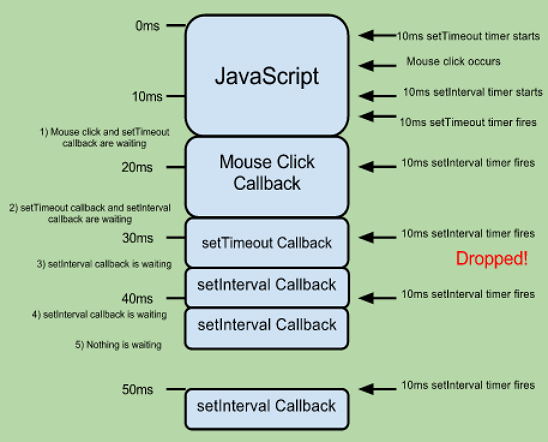

Concurrency Programming of WebApp
2014. 11
Overview
- Concurrency Programming
- Concurrency Programming of Web
- JavaScript Concurrency Model
- Web Worker
- TODO::
Concurrency Programming
Concurrency Programming
- Concurrency is the notion of multiple things happening at the same time
Models for Programming Concurrency
- Sequential Programming
- Message-passing Concurrency
- Shared-state Concurrency
- Mutexes, Semaphores, or Monitors
Concurrency in Java
- Processes
- Threads
- Locks and thread synchronization

How about the Web?

Concurrency Programming of Web
- Server Side
- Client Side
Server Side
- Powerful Framework
- Spring, Node.js, Etc
- Use kind of operating system for development
- Support for multi-core and multi-threading
- Java
- JavaScript (Node.js cluster, multiplexing)
- Support for multi-core and multi-threading
Client Side (WebApp)
- On the Browser
- Use kind of browser interface for development
Support for multi-core and multi-threading- Single Thread concept of JavaScript running in browser
JavaScript Concurrency Model
UI Thread in Browser
- Single Threaded Event Loop/Queue Mechanism
- UI Thread is responsible for both UI Updates and JavaScrtipt Execution

When Button Click Event
When Button Click Event
When Button Click Event
When Button Click Event
When Button Click Event
When Button Click Event
UI pending while JavaScript is executing
UI long pending while Heavy Weight JavaScript is executing
Unresponsive UI


Runaway Script Timer Limits
- IE: 5 million statements
- Chrome: Unknown, Self crash control
- Firefox: 10 seconds
- Safari: 5 seconds
Imitate Multi-Thread Programming
- JavaScript Timers
- var id = setTimeout( fn, delay );
- var id = setInterval( fn, delay );
- clearTimeout( id );
- clearInterval( id );
Timer delay is not guaranteed
function fun1() {
console.log("fun1");
setTimeout(fun2, 0);
console.log("fun1-2");
fun3();
}
function fun2() {
console.log("fun2");
}
function fun3() {
console.log("fun3");
}
fun1();
Timer delay is not guaranteed

Multithreaded Programming to JavaScript is Impossible?
Possible to WebWorker.
Web Worker
- A web worker is a JavaScript running in the background, without affecting the performance of the page.

Web Worker
Loading Route...
Goods
- UI 와 Business Logic 분리가능
- UI 는 항상 non-blocking 되어야 하는 환경
- Heavy Weight Scripts (복잡한 산술계산)
- AJAX 의 결과 값이 크고 이에 대한 parsing / filter 에 대한 workload 가 큰경우
Bads
- Limited Access
- window, document, console, parent object
- Page 의 script, functions, global variable 에 접근 불가
- 공유 자원이 없기 때문에 thread 간 race condition이 발생하지 않음
- Shared Worker 는 Worker 내의 전역변수 공유가능
Kinds of Worker
- DedicatedWorker
- 하나의 Worker 가 하나의 Thread 를 가지는 Worker
- SharedWorker
- 여러 개의 Worker 가 하나의 프로세서를 공유하는 Worker
DedicatedWorker Tutorial
// index.html
// worker.js
// importScripts( ‘library1.js’, ‘library2.js’);
onmessage = function ( event ) {
// TODO:: Bussiness Logic
postMessage( data );
}
SharedWorker Tutorial
// index.html
// sharedWorker.js
var globalConnections = 0;
onconnect = function ( event ) {
var port = event.ports[0];
globalConnections++;
port.onmessage = function ( event ) {
port. postMessage( globalConnections );
// port.close();
}
}
Debugging SharedWorker
- Chrome Dev Tools
- chrome://inspect
WebWorker Browser Support

SharedWorker Browser Support
Tizen Browser Support
Q&A
Thank you!
leechwin1@gmail.com